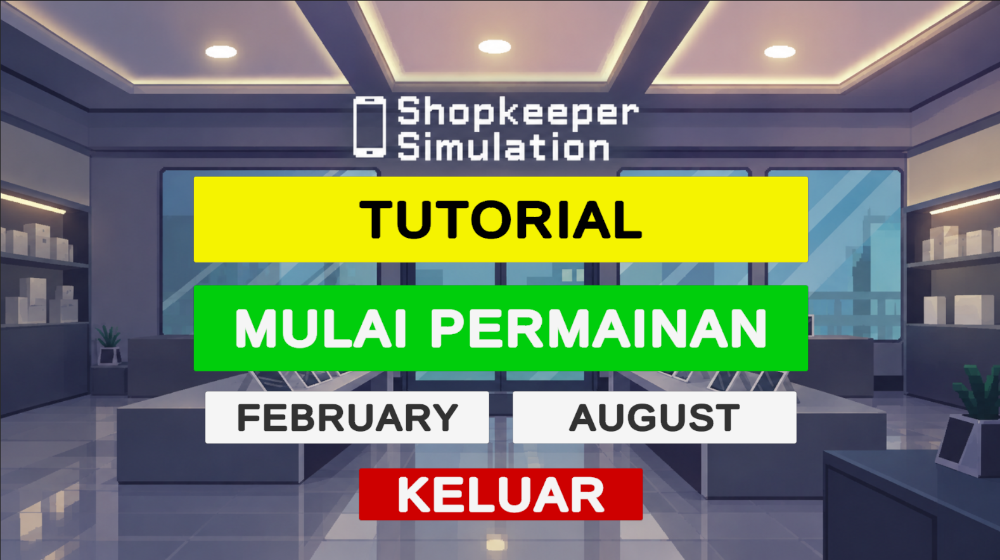

2025–2026 · Simulation
Shopkeeper Simulation
A PC vertical-slice simulation about managing a second-hand phone shop. Inspect device condition, evaluate prices, negotiate with customers, and manage money, storage, and time.
Gameplay systems
- Inspect physical condition, screen, connectivity, and camera.
- Evaluate prices based on device condition and market value.
- Negotiate with customers; rejected or incomplete offers affect customer patience.
- Manage money, storage capacity, and in-game time.
- An eight-slide tutorial introduces the main systems.
Testing & iteration
Questionnaire testing with 30 respondents was used to evaluate the tutorial. System understanding had the lowest score (3.88), informing further tutorial refinement.